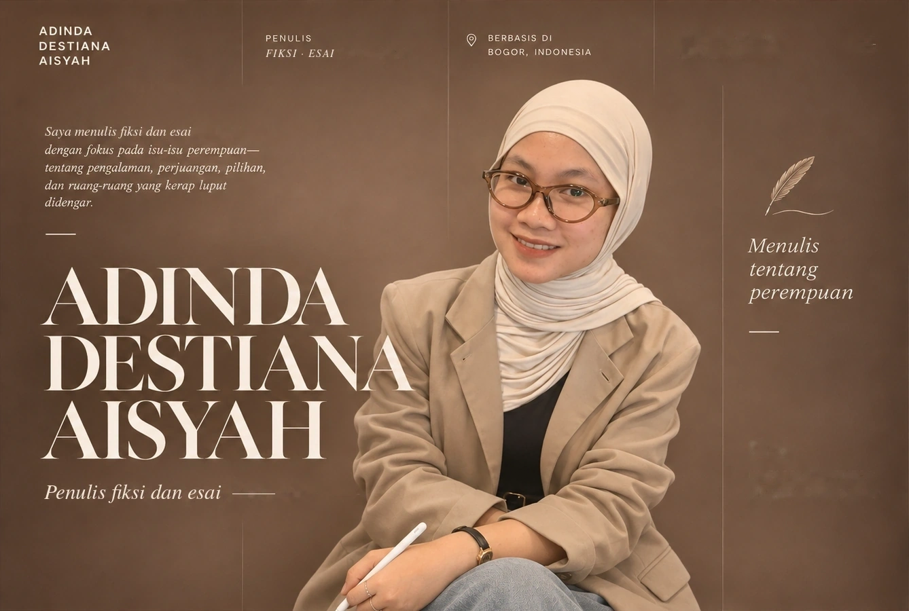
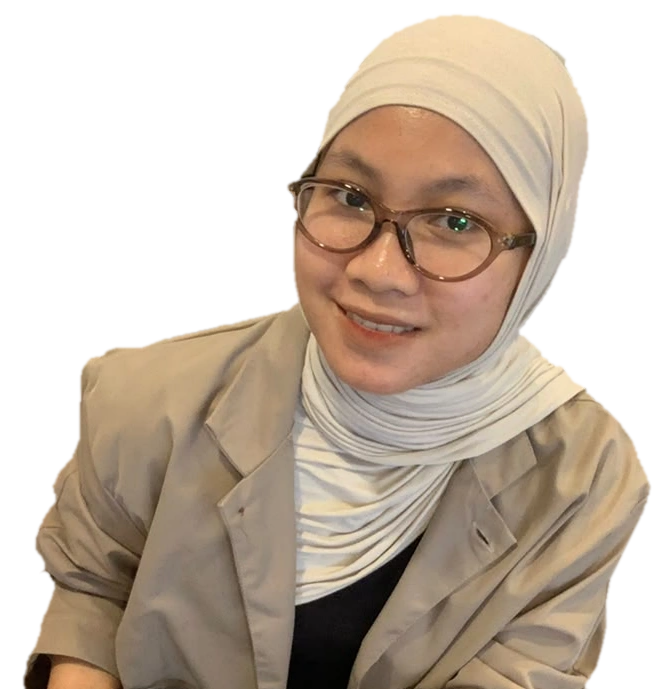

01 / Cerpen
Perempuan yang Terlelap dalam Duka
Kumpulan cerita tentang ketidakadilan, kekerasan, dan pengalaman perempuan.
Naskah belum tersedia
Penulis fiksi dan esai

Saya menulis fiksi dan esai dengan fokus pada isu-isu perempuan—tentang pengalaman, perjuangan, pilihan, dan ruang-ruang yang kerap luput didengar.
Ada hal-hal yang lebih jernih ketika dibaca melalui rekaan; ada pula yang perlu dipertanyakan lewat esai.
Kumpulan cerpen yang menempatkan pengalaman, luka, dan ketidakadilan terhadap perempuan di pusat cerita.
Lihat karya →Jejak tulisan saya di berbagai media: cerita, pembacaan, dan kegelisahan yang menemukan bentuknya.
Kumpulan cerita tentang ketidakadilan, kekerasan, dan pengalaman perempuan.
Naskah belum tersediaCerpen yang diadaptasi menjadi film pendek dengan judul yang sama.
Naskah belum tersediaTentang kemandirian perempuan, cita-cita, dan hak menentukan arah hidup sendiri.
Naskah belum tersediaDari Bogor, saya menulis fiksi dan esai. Saya tertarik pada perkara yang kerap dianggap sepele: siapa yang berhak menentukan hidup seorang perempuan, siapa yang diberi kesempatan untuk menceritakan pengalamannya, dan mengapa kebebasan terkadang masih harus meminta izin.
Lebih dekat dengan saya →